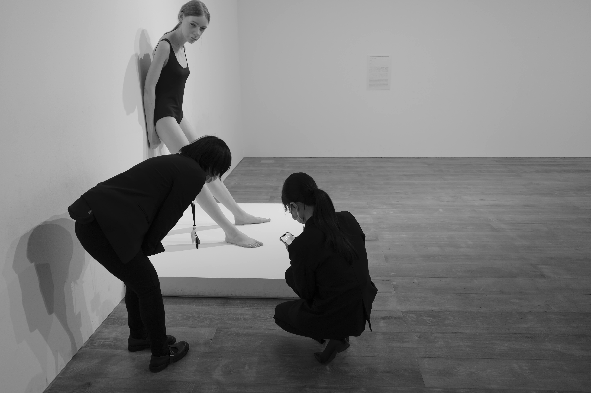

Exhibition study
Staged Encounters
A study of looking and being looked at: bodies, artwork, and the small choreography that forms around an exhibition.
Back to camera canvas →
Exhibition study
A study of looking and being looked at: bodies, artwork, and the small choreography that forms around an exhibition.
Back to camera canvas →